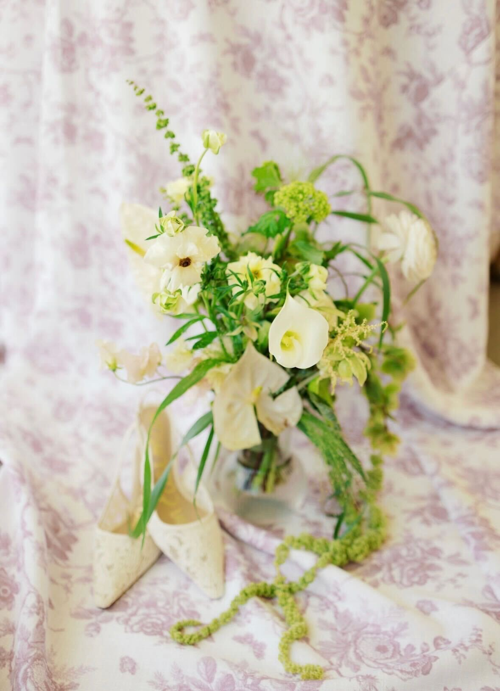

Hill Country
Hill Country Bridal
Bridal Zinnias
Zinnias The Party
The Party Sunflowers
Sunflowers Bouquet
Bouquet Pastels
Pastels Bluebonnets
Bluebonnets Green & White
Green & White Cosmos
Cosmos Ceremony
Ceremony Signage
Signage Wildflowers
Wildflowers Golden Hour
Golden Hour Butter Yellow
Butter Yellow The Dress
The Dress
DetailsIn the Rows
From the field to the aisle — tap any image to view.
Hill CountryBridalZinniasThe PartySunflowersBouquetPastelsBluebonnetsGreen & WhiteCosmosCeremonySignageWildflowersGolden HourButter YellowThe Dress
DetailsTell me about your day, your event, or just come find me at the stand.